OTIUM is the practice of deliberate leisure. In the classical sense, otium is not escape from work but time when attention returns to memory, landscape, and thought — without a utilitarian deadline.
We shape routes for lingering, not for checklist tourism. The goal is presence in a place rather than consumption of sights.
OTIUM is not a tour operator. It is an invitation to walk, pause, and leave a route unfinished if the light on a façade deserves another minute.
City symbols
Guide. Places in this edition: 12.
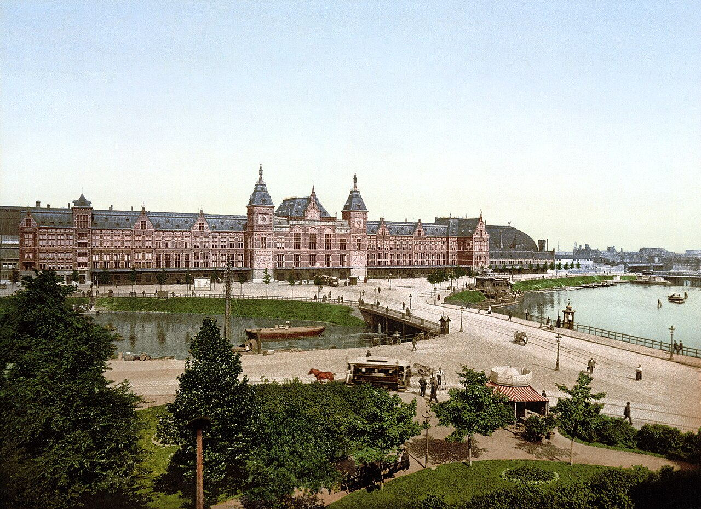
Principal rail terminus on an artificial island at the IJ waterfront. Metro, tram, bus, and ferry connections fan out to the city and North Amsterdam.
Built as Amsterdam's gateway to national rail networks; recent underground lines threaded transit beneath the historic hall.
The default arrival point for many visitors and a busy civic front door.
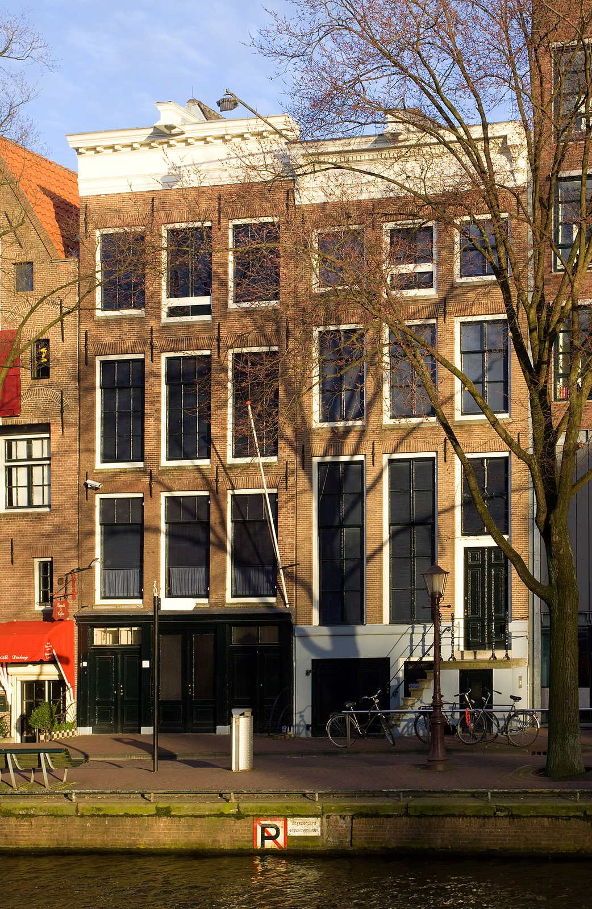
Museum preserving the annexe where Anne Frank and others hid during the occupation. Narrow staircases and original rooms convey the diary's setting.
Otto Frank's office building included a concealed rear house later opened as a memorial museum.
One of Amsterdam's most visited historic sites on the western canal ring.
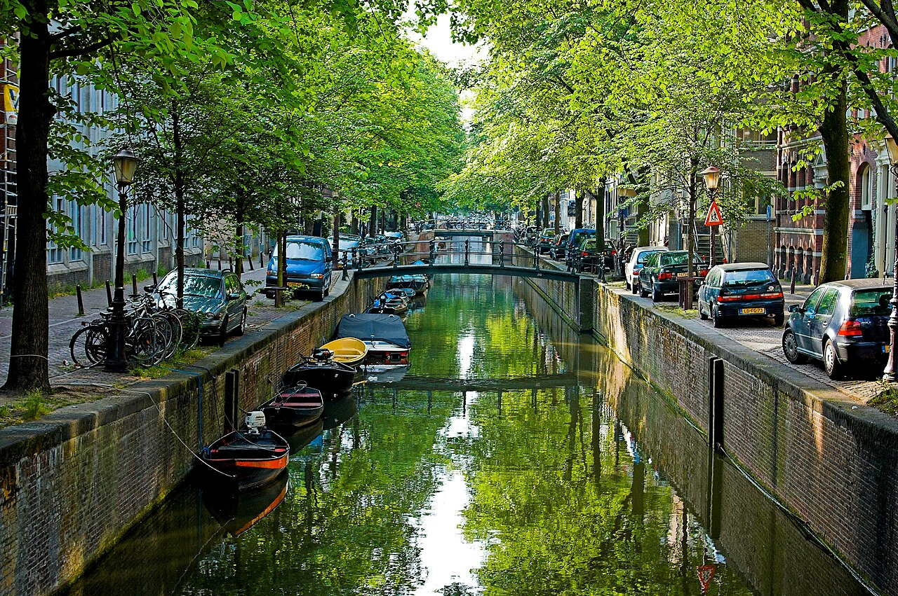
Slow itineraries thread the Herengracht, Keizersgracht, and Prinsengracht, linking house museums, cafés, and houseboat moorings.
Merchants built narrow deep plots along new waterways; many interiors were later modernised while façades stayed protected.
The everyday scenery that makes Amsterdam legible on foot or by boat.
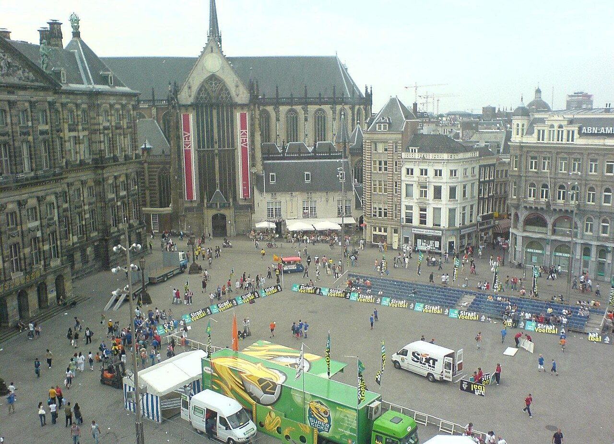
Central square linking shopping streets, the royal palace, and the national monument to WWII victims.
The Amstel was dammed here; the square grew into the city's default gathering point.
The symbolic heart of Amsterdam for protests and events.
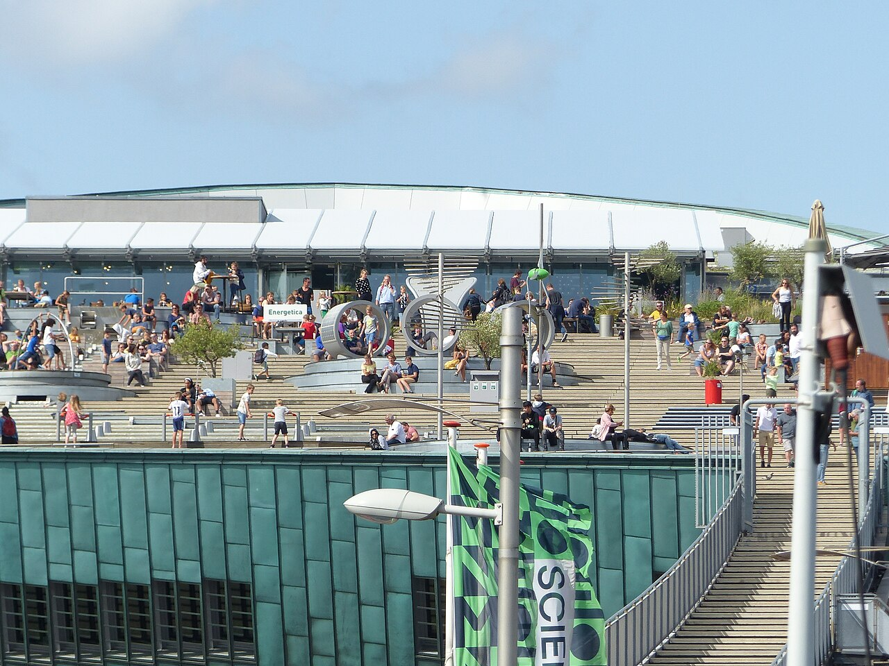
Hands-on science museum shaped like a green copper ship's hull rising above harbour bike parking.
Built on a national science outreach brief; the form echoes industrial harbour shapes.
Family-friendly anchor on the eastern harbour front.
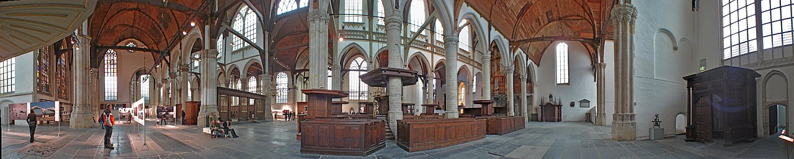
Amsterdam's oldest parish church in the Red Light District courtyard, with stained glass and historic grave slabs.
Founded as a Catholic church; became Calvinist after the Reformation.
Medieval core of the city amid later canal expansion.
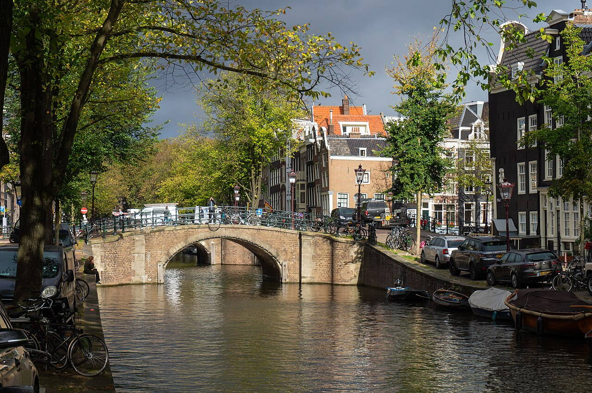
Classic view along the Reguliersgracht where multiple bridges align, framing gabled façades reflected in still water at dawn.
Planned during Amsterdam's Golden Age ring of canals, the street pattern still defines walking routes between neighbourhoods.
The postcard image of Amsterdam's urban water fabric.
National museum of art and history
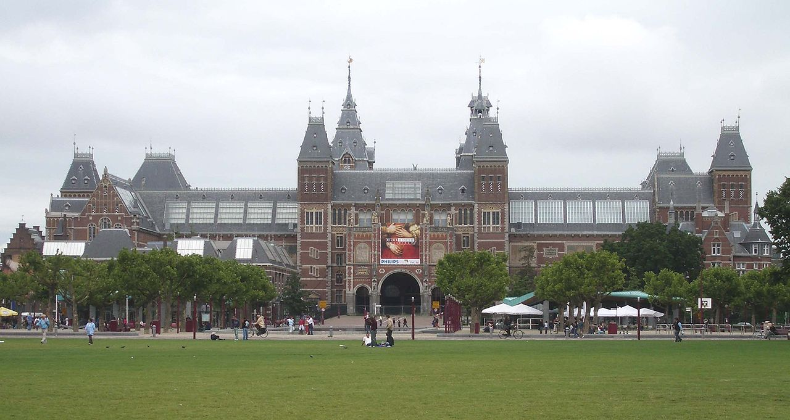
Dutch national museum spanning Golden Age painting, Delftware, ship models, and Asian collections. The Gallery of Honour culminates at Rembrandt's Night Watch.
Founded in The Hague; the Amsterdam palace of art opened in the late 19th century and was thoroughly modernised in the 2000s.
The anchor of Museumplein alongside the Van Gogh Museum and Stedelijk.
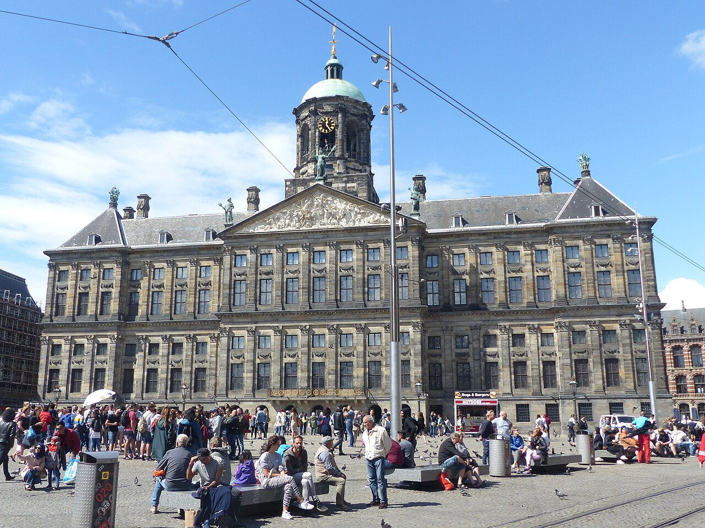
Former city hall turned royal palace on Dam Square, with marble Citizens' Hall and sculpture programme.
Built as Europe's largest secular building of its age; Louis Bonaparte's residence began its royal phase.
Dam Square's architectural anchor and state room showcase.
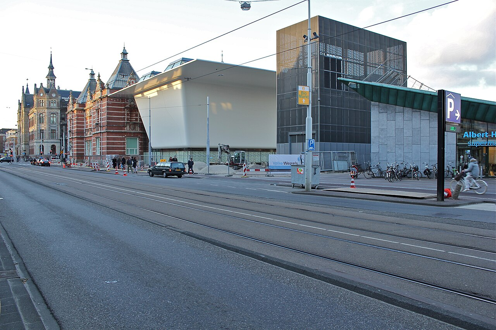
Municipal museum of modern and contemporary art and design, neighbouring the Van Gogh and Rijksmuseum on Museumplein.
Opened as a civic art museum; major expansion added underground galleries and a striking façade above ground.
Amsterdam's primary venue for 20th- and 21st-century art.
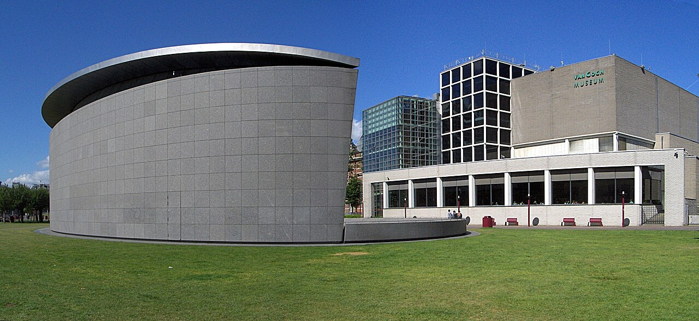
Dedicated museum for Vincent van Gogh and his contemporaries, holding the largest collection of his paintings and drawings.
Founded from family holdings; expansions added exhibition space for temporary shows and visitor services.
Essential for understanding Van Gogh's chronology and materials up close.
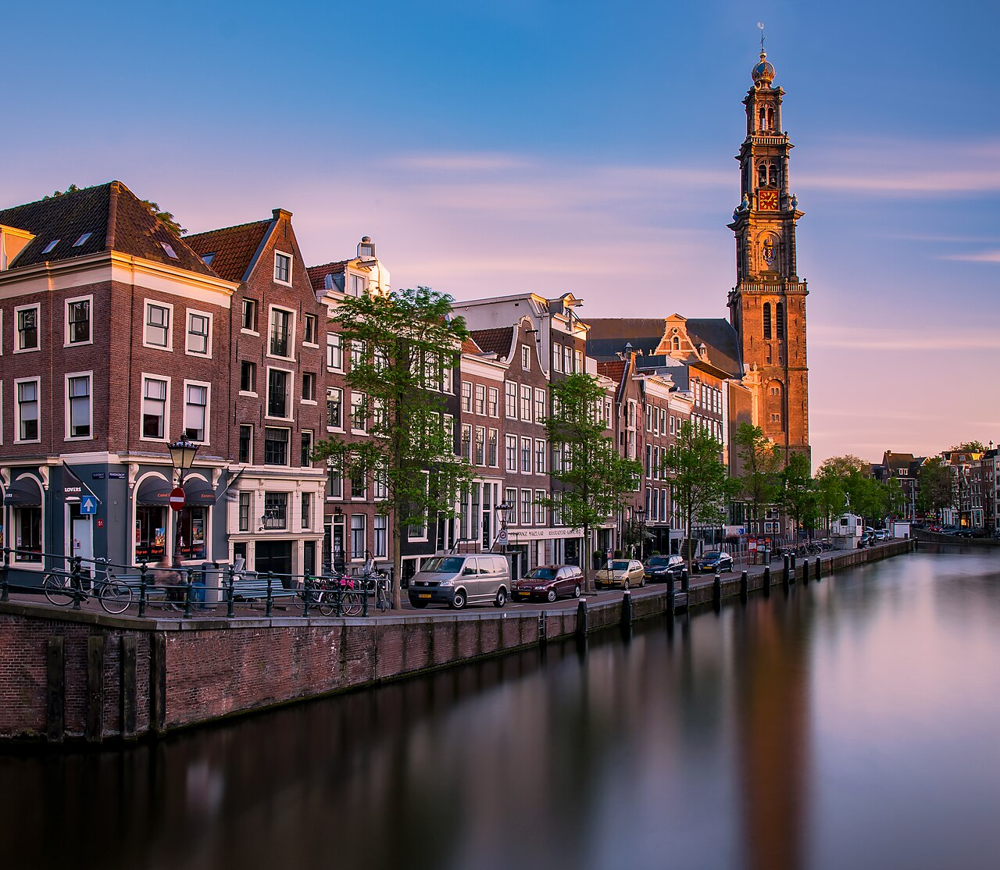
Protestant church beside the Prinsengracht whose tower offers views and bells familiar from city soundscapes.
Part of the Calvinist church provision after the Alteration; the spire became a navigation landmark.
Canal-belt church tower visible from many boat routes.